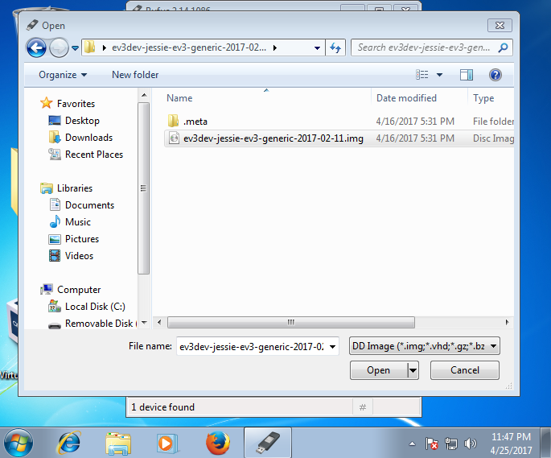
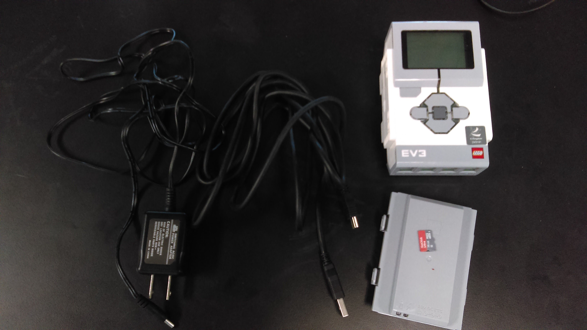
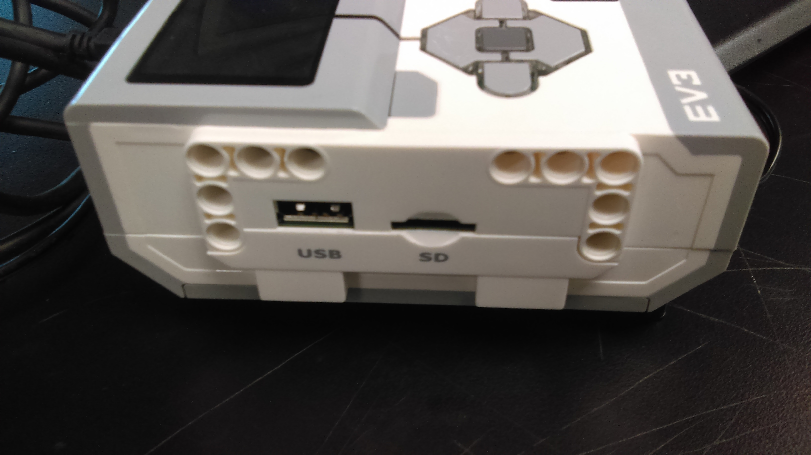
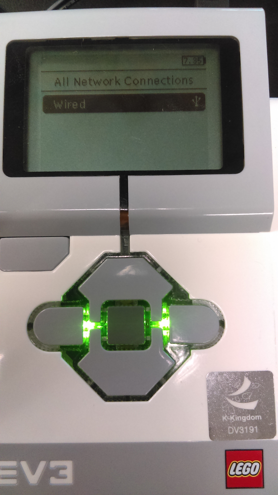
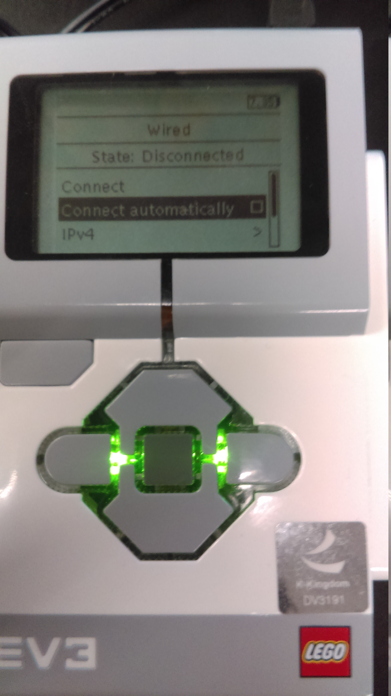
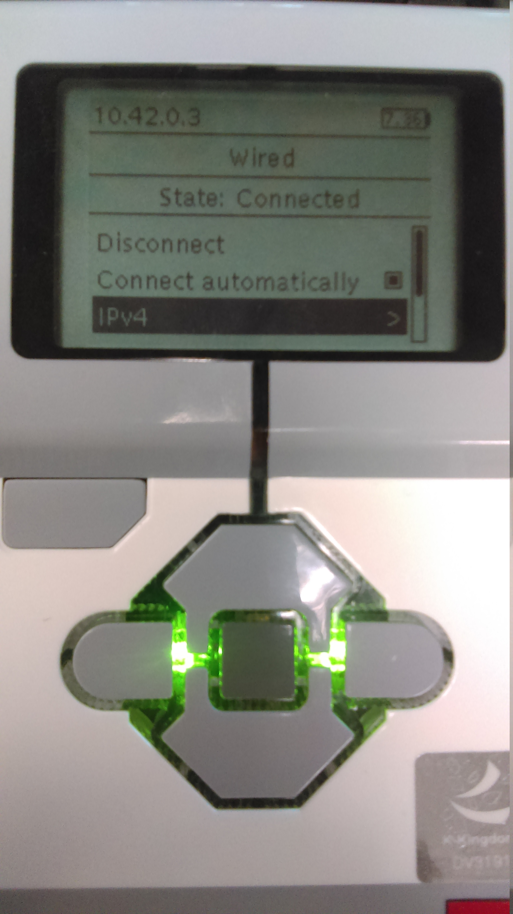
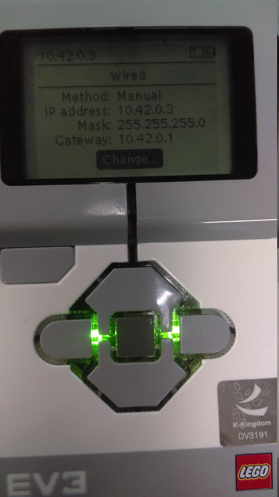
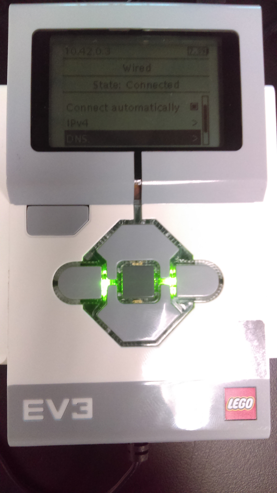
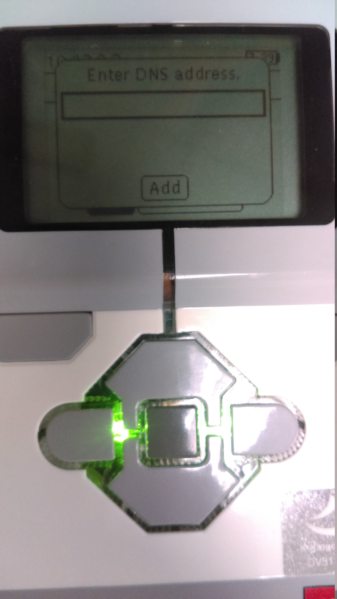

In this md file is talk about how to startup ev3dev.
When you read this document, I assume you already done reading of
option 1 : use refus in Windows
option 2 : use dd utility in GNU/Linux
1). download the ev3dev image for LEGO MINDSTORMS EV3 in www.ev3dev.org/downloads/
2). extract the zip file, assume you download store on desktop

3). plug your mircoSD into comptuer, execute rufus.

4). Change Create a bootable disk using to DD image

5). Select the ev3dev image by click the dvd-rom icon of left of DD image

6). Press start, wait until the green bar go 100%

1). open terminal, except of click on
Acititcy
then type
terminal
, you also can press
ALT+F2
then type
gnome-terminal
to open
terminal
2). copy ev3dev image url in www.ev3dev.org/downloads/ , right click of Download for EV3, select Copy link address
3). use
wget
in terminal to download ev3dev image, to paste what you copy in clipboard press
CTRL+SHIFT+V
as same time
use
cd /tmp
switch to
/tmp
directory, so the download file won’t keep it after boot
cd /tmp
wget https://github.com/ev3dev/ev3dev/releases/download/ev3dev-jessie-2017-02-11/ev3dev-jessie-ev3-generic-2017-02-11.zip
4). after the download completed, need to
unzip
the file.
unzip ev3dev-jessie-ev3-generic-2017-02-11.zip
cd ev3dev-jessie-ev3-generic-2017-02-11
5). plug your mircoSD into sd card slot or by mircoSD USB read to the computer, use
sudo fdisk -l
to find out which is the USB named.
sudo fdisk -l
in sd card slot case, you see
/dev/mmcblk0
as follow
...
Disk /dev/mmcblk0: 14.5 GiB, 15523119104 bytes, 30318592 sectors
Units: sectors of 1 * 512 = 512 bytes
Sector size (logical/physical): 512 bytes / 512 bytes
I/O size (minimum/optimal): 512 bytes / 512 bytes
Disklabel type: dos
Disk identifier: 0xfec402a8
...
in mircoSD USB reader case, you see
/dev/sdx
as follow. (x is the letter the device asigned). If using linux live cd is will be
/dev/sdc
...
Disk /dev/sdd: 14.5 GiB, 15523119104 bytes, 30318592 sectors
Units: sectors of 1 * 512 = 512 bytes
Sector size (logical/physical): 512 bytes / 512 bytes
I/O size (minimum/optimal): 512 bytes / 512 bytes
Disklabel type: dos
Disk identifier: 0xfec402a8
...
6). flash the ev3dev image into the mircoSD card.
dd if=ev3dev-jessie-ev3-generic-2017-02-11.img of=/dev/mmcblk0
7). now type
sudo fdisk -l
again, you see
...
Device Boot Start End Sectors Size Id Type
/dev/mmcblk0p1 8192 106495 98304 48M b W95 FAT32
/dev/mmcblk0p2 106496 30318591 30212096 14.4G 83 Linux
...
as your read as here, I though you already have these.

1). The mircoSD card slot is locate as left side of EV3 brick

2). insert mircoSD, the front side(logo) of mircoSD face up.

3). connect EV3 brick to computer though USB cable, then press the center key(OK) to boot up EV3 brick. You should see Linux like start up screen.

4). ouch, I forget attach the power cable.

5). ev3dev brick menu

1). Enter Wireless and Networks

2). Enter All Network Connections

3). Enter Wired

4). Enable Connect automatically
Default as disable

Now enabled

5). Enter IPv4

6). Enter Change…

7). Select Load Linux defaults

8). The Linux defaults config

9). RETURN, enter DNS

10). Select Add

11). OK,

12). Type in 8.8.8.8, then select OK

13). Select Add

1). open your
terminal
, type
sudo ifconfig usb0 10.42.0.1
sudo ifconfig usb0 10.42.0.1
troubleshooting, type
sudo ifconfig
to see
usb0
,
usb1
exist or not
code/ev3dev-connecting-to-the-internet/via-usb.sh
1).
create a empty file call via-usb.sh in code user code direcotry
cd ~
mkdir code
cd code
touch via-usb.sh
use
geany
IDE to edit
via-usb.sh
geany via-usb.sh
type the follow code in the file,
CRTL+S
to save the content,
ALT+F4
to quit geany.
caution: if computer access Internet via WiFi, change eth0 to wlan0 in line 3.
#!/bin/sh
ifconfig usb0 10.42.0.1
iptables --table nat --append POSTROUTING --out-interface eth0 -j MASQUERADE
iptables --append FORWARD --in-interface usb0 -j ACCEPT
echo 1 > /proc/sys/net/ipv4/ip_forward
gain execute pressmission to the via-usb.sh
chmod +x via-sub.sh
execute the via-usb.sh with priilage right
sudo ./via-sub.sh
code/ev3dev-connecting-to-the-internet/via-wifi-adapter
// TODO
1). attach WiFi adapter to ev3-brick USB port, using the ev3dev brick menu config wireless connection
./course/embedded-system.md#embedded-system
./embedded-system/hello-world-ev3dev.md#hello-world-ev3dev